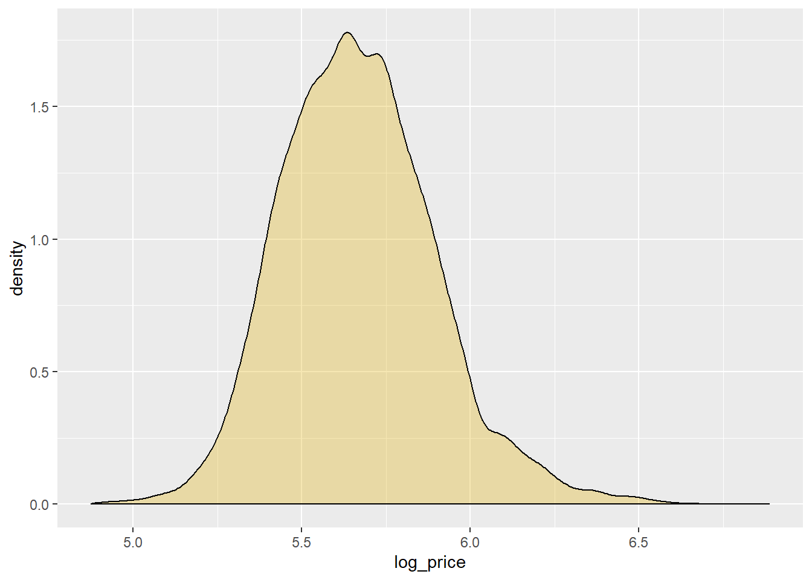
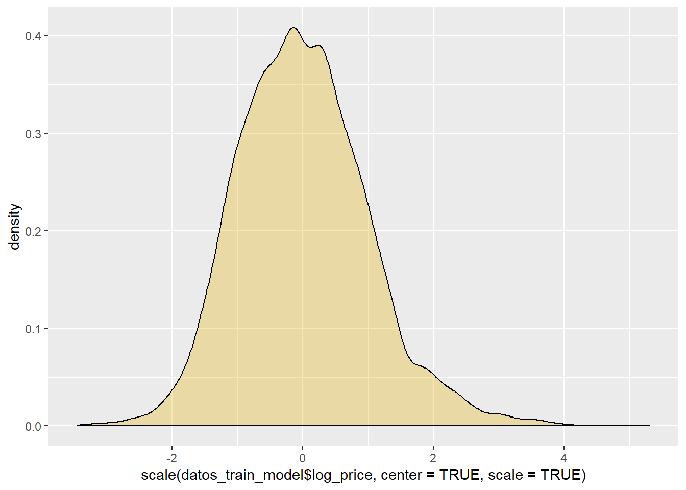
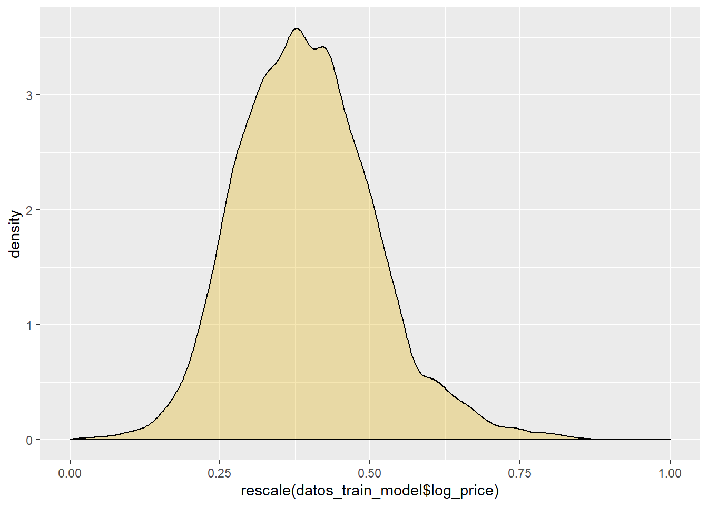
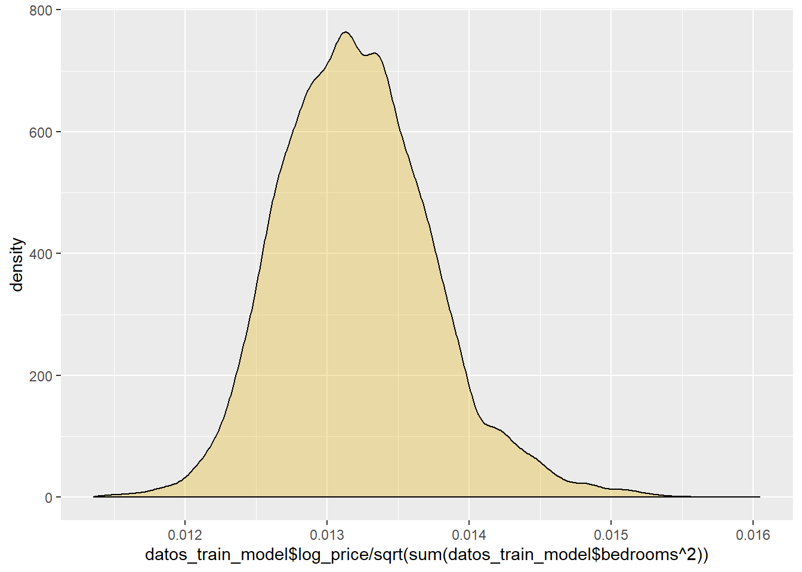

8 Ajuste, interpretación y diagnosis del modelo de regresión lineal múltiple
datos_train_model <- datos_train[c(1,22,4,23,7,24,8:11,26,13,14,18:21,25,27)]
datos_train_model$waterfront<-as.factor(datos_train_model$waterfront)
datos_train_model$view<-as.factor(datos_train_model$view)
datos_train_model$condition<-as.factor(datos_train_model$condition)
datos_train_model$bathrooms_group<-as.numeric(datos_train_model$bathrooms_group)#Ahora reescalamos un variable de la base de datos
#Sin reescalar para comprobar los efectos de los 3 tipos de reescalados:
ggplot(datos_train_model, aes(x=log_price)) + geom_density(alpha=.3, fill="#E1AF00")
#FORMA1: F-score scaling: resta la media y divide por la desviación tipica
ggplot(datos_train_model, aes(x=scale(datos_train_model$log_price, center = TRUE, scale = TRUE) )) + geom_density(alpha=.3, fill="#E1AF00")
#FORMA2: 0-1 scaling: (V - min V)/(max V - min V)
ggplot(datos_train_model, aes(x=rescale(datos_train_model$log_price))) + geom_density(alpha=.3, fill="#E1AF00")
#FORMA3: Scaling to unit length based on the euclidean length
ggplot(datos_train_model, aes(x=datos_train_model$log_price/sqrt(sum(datos_train_model$bedrooms^2)))) + geom_density(alpha=.3, fill="#E1AF00")
#Una vez decidamos el reescalado, reescalar todo, en caso de elegir la forma2:
datos_train_model$bedrooms<-rescale(datos_train_model$bedrooms)
datos_train_model$log_price<-rescale(datos_train_model$log_price)
datos_train_model$bathrooms_group<-rescale(datos_train_model$bathrooms_group)
datos_train_model$log_sqft_living<-rescale(datos_train_model$log_sqft_living)
datos_train_model$floors<-rescale(datos_train_model$floors)
datos_train_model$sqft_above<-rescale(datos_train_model$sqft_above)
datos_train_model$sqft_basement<-rescale(datos_train_model$sqft_basement)
datos_train_model$lat<-rescale(datos_train_model$lat)
datos_train_model$long<-rescale(datos_train_model$long)
datos_train_model$sqft_living15<-rescale(datos_train_model$sqft_living15)
datos_train_model$sqft_lot15<-rescale(datos_train_model$sqft_lot15)# Vamos a crear un data_frame nuevo limpio: (????)
modelo6<-lm(formula = log_price ~ log_sqft_living, data = datos_train_model)
summary(modelo6)##
## Call:
## lm(formula = log_price ~ log_sqft_living, data = datos_train_model)
##
## Residuals:
## Min 1Q Median 3Q Max
## -0.238485 -0.063132 0.002957 0.055096 0.282330
##
## Coefficients:
## Estimate Std. Error t value Pr(>|t|)
## (Intercept) 0.051733 0.003079 16.8 <0.0000000000000002 ***
## log_sqft_living 0.700063 0.006139 114.0 <0.0000000000000002 ***
## ---
## Signif. codes: 0 '***' 0.001 '**' 0.01 '*' 0.05 '.' 0.1 ' ' 1
##
## Residual standard error: 0.08365 on 15127 degrees of freedom
## Multiple R-squared: 0.4623, Adjusted R-squared: 0.4622
## F-statistic: 1.3e+04 on 1 and 15127 DF, p-value: < 0.00000000000000022# R_squared = 0.46
modelo5<-lm(formula = log_price ~ log_sqft_living + bathrooms_group, data = datos_train_model)
summary(modelo5)##
## Call:
## lm(formula = log_price ~ log_sqft_living + bathrooms_group, data = datos_train_model)
##
## Residuals:
## Min 1Q Median 3Q Max
## -0.234945 -0.062933 0.002826 0.055338 0.281961
##
## Coefficients:
## Estimate Std. Error t value Pr(>|t|)
## (Intercept) 0.056307 0.003156 17.84 < 0.0000000000000002 ***
## log_sqft_living 0.655137 0.009296 70.48 < 0.0000000000000002 ***
## bathrooms_group 0.057169 0.008892 6.43 0.000000000132 ***
## ---
## Signif. codes: 0 '***' 0.001 '**' 0.01 '*' 0.05 '.' 0.1 ' ' 1
##
## Residual standard error: 0.08354 on 15126 degrees of freedom
## Multiple R-squared: 0.4637, Adjusted R-squared: 0.4637
## F-statistic: 6540 on 2 and 15126 DF, p-value: < 0.00000000000000022# R_squared = 0.46
modelo4<-lm(formula = log_price ~ log_sqft_living + bathrooms_group + grade_categ, data = datos_train_model)
summary(modelo4)##
## Call:
## lm(formula = log_price ~ log_sqft_living + bathrooms_group +
## grade_categ, data = datos_train_model)
##
## Residuals:
## Min 1Q Median 3Q Max
## -0.247691 -0.061087 0.002396 0.055183 0.304191
##
## Coefficients:
## Estimate Std. Error t value Pr(>|t|)
## (Intercept) 0.091264 0.015865 5.753 0.00000000896 ***
## log_sqft_living 0.566862 0.009408 60.252 < 0.0000000000000002 ***
## bathrooms_group 0.041202 0.008600 4.791 0.00000167817 ***
## grade_categ1 0.006131 0.015957 0.384 0.701
## grade_categ2 0.099402 0.016324 6.089 0.00000000116 ***
## ---
## Signif. codes: 0 '***' 0.001 '**' 0.01 '*' 0.05 '.' 0.1 ' ' 1
##
## Residual standard error: 0.08065 on 15124 degrees of freedom
## Multiple R-squared: 0.5003, Adjusted R-squared: 0.5001
## F-statistic: 3785 on 4 and 15124 DF, p-value: < 0.00000000000000022# R_squared = 0.5
modelo3<-lm(formula = log_price ~ log_sqft_living + bathrooms_group + grade_categ + lat + floors + yr_renovated_catg, data = datos_train_model)
summary(modelo3)##
## Call:
## lm(formula = log_price ~ log_sqft_living + bathrooms_group +
## grade_categ + lat + floors + yr_renovated_catg, data = datos_train_model)
##
## Residuals:
## Min 1Q Median 3Q Max
## -0.264926 -0.042589 -0.002836 0.038571 0.265149
##
## Coefficients:
## Estimate Std. Error t value Pr(>|t|)
## (Intercept) -0.021345 0.012832 -1.663 0.0962 .
## log_sqft_living 0.548488 0.007596 72.207 < 0.0000000000000002 ***
## bathrooms_group 0.035438 0.007587 4.671 0.000003027244360 ***
## grade_categ1 -0.012398 0.012839 -0.966 0.3342
## grade_categ2 0.069282 0.013139 5.273 0.000000135992142 ***
## lat 0.210309 0.002387 88.115 < 0.0000000000000002 ***
## floors 0.020603 0.002881 7.152 0.000000000000894 ***
## yr_renovated_catg1 0.042241 0.002603 16.225 < 0.0000000000000002 ***
## ---
## Signif. codes: 0 '***' 0.001 '**' 0.01 '*' 0.05 '.' 0.1 ' ' 1
##
## Residual standard error: 0.06488 on 15121 degrees of freedom
## Multiple R-squared: 0.6767, Adjusted R-squared: 0.6765
## F-statistic: 4521 on 7 and 15121 DF, p-value: < 0.00000000000000022# R_squared = 0.67
#
# modelo3<-lm(formula = log_price ~ log_sqft_living + bathrooms_group + grade_categ + lat + yr_built, data = datos_train_model)
# summary(modelo3)
# R_squared = 0.68
modelo3<-lm(formula = log_price ~ log_sqft_living + bathrooms_group + grade_categ + lat + waterfront, data = datos_train_model)
summary(modelo3)##
## Call:
## lm(formula = log_price ~ log_sqft_living + bathrooms_group +
## grade_categ + lat + waterfront, data = datos_train_model)
##
## Residuals:
## Min 1Q Median 3Q Max
## -0.267500 -0.042102 -0.002454 0.038977 0.251554
##
## Coefficients:
## Estimate Std. Error t value Pr(>|t|)
## (Intercept) -0.023354 0.012700 -1.839 0.0659 .
## log_sqft_living 0.545590 0.007498 72.761 < 0.0000000000000002 ***
## bathrooms_group 0.056467 0.006852 8.241 < 0.0000000000000002 ***
## grade_categ1 -0.012349 0.012710 -0.972 0.3313
## grade_categ2 0.064928 0.013006 4.992 0.000000603 ***
## lat 0.213484 0.002359 90.488 < 0.0000000000000002 ***
## waterfront1 0.152273 0.006101 24.959 < 0.0000000000000002 ***
## ---
## Signif. codes: 0 '***' 0.001 '**' 0.01 '*' 0.05 '.' 0.1 ' ' 1
##
## Residual standard error: 0.06423 on 15122 degrees of freedom
## Multiple R-squared: 0.6831, Adjusted R-squared: 0.6829
## F-statistic: 5432 on 6 and 15122 DF, p-value: < 0.00000000000000022# R_squared = 0.68
modelo3<-lm(formula = log_price ~ log_sqft_living + bathrooms_group + grade_categ + lat + waterfront + view, data = datos_train_model)
summary(modelo3)##
## Call:
## lm(formula = log_price ~ log_sqft_living + bathrooms_group +
## grade_categ + lat + waterfront + view, data = datos_train_model)
##
## Residuals:
## Min 1Q Median 3Q Max
## -0.266085 -0.040327 -0.001998 0.038176 0.259717
##
## Coefficients:
## Estimate Std. Error t value Pr(>|t|)
## (Intercept) -0.021703 0.012338 -1.759 0.0786 .
## log_sqft_living 0.512808 0.007366 69.622 < 0.0000000000000002 ***
## bathrooms_group 0.063002 0.006660 9.460 < 0.0000000000000002 ***
## grade_categ1 -0.004398 0.012351 -0.356 0.7218
## grade_categ2 0.066022 0.012637 5.225 0.000000177 ***
## lat 0.213553 0.002293 93.134 < 0.0000000000000002 ***
## waterfront1 0.083968 0.007238 11.600 < 0.0000000000000002 ***
## view1 0.047200 0.004198 11.243 < 0.0000000000000002 ***
## view2 0.044979 0.002489 18.074 < 0.0000000000000002 ***
## view3 0.063506 0.003424 18.548 < 0.0000000000000002 ***
## view4 0.082227 0.005176 15.887 < 0.0000000000000002 ***
## ---
## Signif. codes: 0 '***' 0.001 '**' 0.01 '*' 0.05 '.' 0.1 ' ' 1
##
## Residual standard error: 0.0624 on 15118 degrees of freedom
## Multiple R-squared: 0.701, Adjusted R-squared: 0.7008
## F-statistic: 3544 on 10 and 15118 DF, p-value: < 0.00000000000000022# R_squared = 0.70
modelo3<-lm(formula = log_price ~ log_sqft_living + bathrooms_group + grade_categ + lat + floors + view, data = datos_train_model)
summary(modelo3)##
## Call:
## lm(formula = log_price ~ log_sqft_living + bathrooms_group +
## grade_categ + lat + floors + view, data = datos_train_model)
##
## Residuals:
## Min 1Q Median 3Q Max
## -0.264912 -0.040219 -0.002497 0.037987 0.255935
##
## Coefficients:
## Estimate Std. Error t value Pr(>|t|)
## (Intercept) -0.017812 0.012356 -1.442 0.149
## log_sqft_living 0.514837 0.007382 69.740 < 0.0000000000000002 ***
## bathrooms_group 0.033817 0.007305 4.629 0.000003705 ***
## grade_categ1 -0.004757 0.012365 -0.385 0.700
## grade_categ2 0.064685 0.012652 5.113 0.000000322 ***
## lat 0.211627 0.002298 92.097 < 0.0000000000000002 ***
## floors 0.027999 0.002783 10.062 < 0.0000000000000002 ***
## view1 0.049738 0.004208 11.821 < 0.0000000000000002 ***
## view2 0.046588 0.002493 18.687 < 0.0000000000000002 ***
## view3 0.068574 0.003416 20.074 < 0.0000000000000002 ***
## view4 0.118213 0.004251 27.810 < 0.0000000000000002 ***
## ---
## Signif. codes: 0 '***' 0.001 '**' 0.01 '*' 0.05 '.' 0.1 ' ' 1
##
## Residual standard error: 0.06246 on 15118 degrees of freedom
## Multiple R-squared: 0.7003, Adjusted R-squared: 0.7001
## F-statistic: 3533 on 10 and 15118 DF, p-value: < 0.00000000000000022# R_squared = 0.7
vif(modelo3) #nos da un factor que mida la inflacion de la varianza por tener variable co-lineales## GVIF Df GVIF^(1/(2*Df))
## log_sqft_living 2.593077 1 1.610303
## bathrooms_group 2.775579 1 1.666007
## grade_categ 1.317442 2 1.071354
## lat 1.009433 1 1.004705
## floors 1.408083 1 1.186627
## view 1.097868 4 1.011740# usamos una seleccion automatica de variables para comparar la evaluacion del modelo
# regfit_full <- leaps::regsubsets(log_price~., datos_train_model[c(2:5,7,10:13,16:21)]) #Best subset
# reg_sum
# reg_sum <- summary(regfit_full)
# coef(regfit_full, 6)
# modelo con las caracteristicas de la seleccion automatica Best subset
# modelo3<-lm(formula = log_price ~ floors + waterfront+ yr_built + lat + log_sqft_living + grade_categ, data = datos_train_model)
# summary(modelo3)
# R_squared = 0.7
# modelo regularización lasso
# x <- model.matrix(log_price~., datos_train_model[c(2:5,7,10:13,16:21)])
# x
#
# y <- datos_train_model$log_price
# y
#
# library(glmnet)
#
# set.seed(1234)
# cv_result <- cv.glmnet(x,y,alpha=1)
# cv_result
#
# plot(cv_result)
#
# best_lam <- cv_result$lambda.min
# best_lam
#
# out <- glmnet(x,y,alpha=1,lambda = best_lam)
# out
#
# lasso_coef <- predict(out,type="coefficients",s=best_lam)[1:20,]
# lasso_coef[lasso_coef!=0]
# lasso_coef
#
#
# first_six <- max(which(cv_result$nzero == 6))
# first_six
#
# my_lam <- cv_result$lambda[first_six]
# my_lam
#
# out_six <- glmnet(x,y,alpha=1,lambda = first_six)
# out_six
#
# lasso_coef_six <- predict(out_six,type="coefficients")[1:20,]
# lasso_coef_six
#
# lasso_coef_six[lasso_coef_six!=0]
# lasso_coef_six